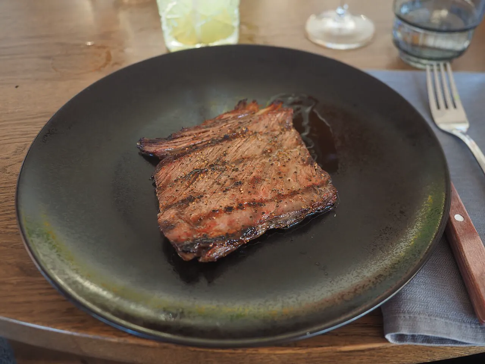
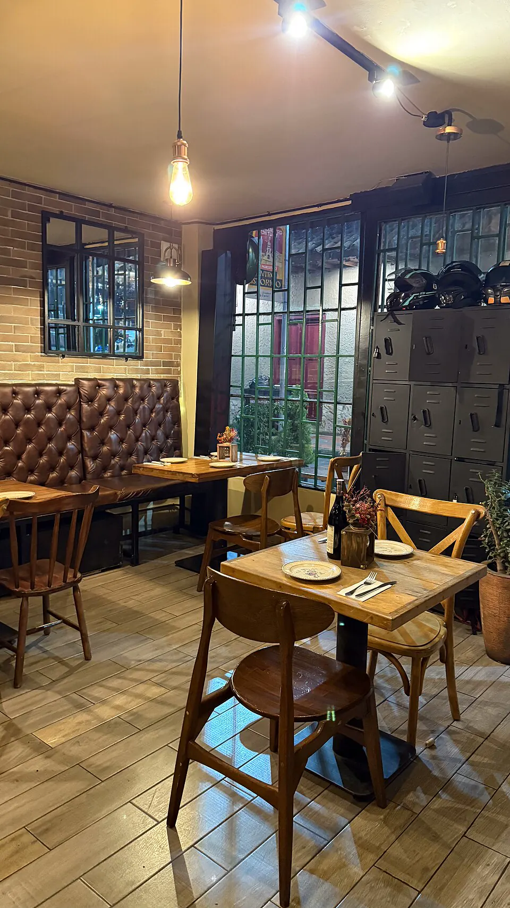
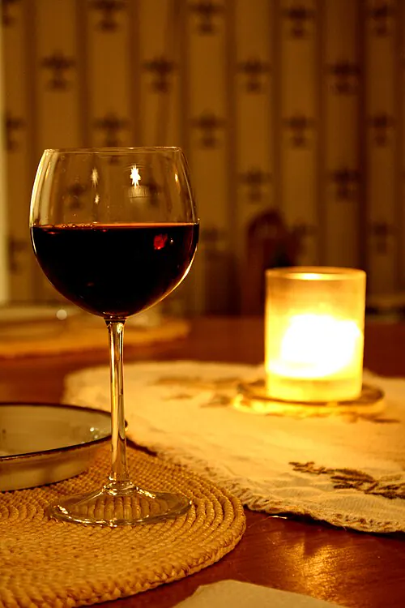

Sereno : cuisine italienne
Grillades, pâtes fraîches et poissons. 4,3/5 sur Google, 423 avis.
Visite
Rue Georges Tourneur, Marchienne-au-Pont
- Mar, mer, jeu, sam
- 18h - 22h
- Ven, dim
- 12h - 14h & 18h - 22h
- Lundi
- Fermé
- AccèsParking et terrasse

La carte : viandes, pâtes et poissons


La cave : vins, apéritifs et digestifs

La maison
Grillades au feu vif, pâtes fraîches et poissons : une table italienne familiale à Marchienne-au-Pont, avec 423 avis sur Google.
4,3 / 5 sur Google
423 avis, une adresse reconnue du quartier.
Un choix large
Viandes, pâtes fraîches, poissons, desserts et une carte de vins italiens.
En famille
Menu enfant, parking et terrasse.